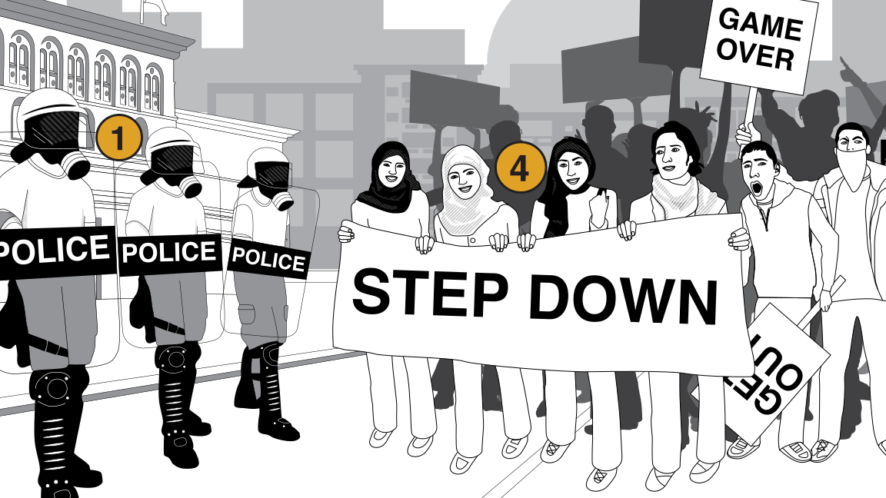
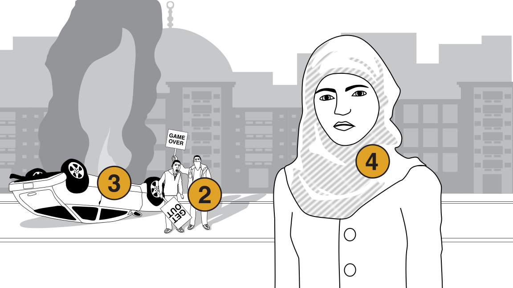
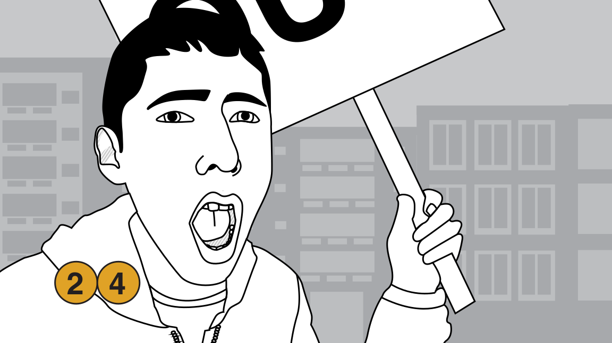

Developed with ❤ by

Information Innovation Lab
Applied research and development of public interest technology.
Are you living in a dictatorship?
Is corruption a problem?
Are police unresponsive to the concerns of citizens?
If your answers to any of these questions is Yes then you’re likely to be at risk. Be mindful of the chances you might be taking with your life and as well as others’ lives.
Risk can come from many places. Be mindful of your surroundings and avoid interacting with anyone you don’t trust.
| .................................................. | .................................................. | .................................................. |
|---|---|---|
|  |  |  |
Police, Military, Gangs, Political Opponents.
People whose actions may harm you.
Fires, explosives, weapons, and any other situational dangers.
Actions you take may harm yourself and others.
Applied research and development of public interest technology.